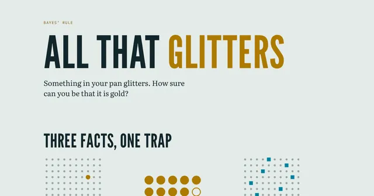

Start here
Every star is an idea you can play with.
Each page explains one idea with a picture you can play with. Pick a star to see its question. Each one you open stays lit, so your sky slowly fills in.
Each page you open stays lit in your sky, on this device.
Every page, by constellation
The same sky as a plain list. Gold dots are the pages you have already opened.
Analytics and data science21 stars
- Bayes' RuleSomething in your pan glitters. How sure can you be that it is gold?
- The Bell MachineWhy do averages always pile into a bell? The central limit theorem, hands on.
- Size the TestDid the new button win, or was it luck? Sample size and power for an A/B test.
- Don't PeekWhy does checking a test early crown fake winners? Peeking and sequential testing.
- Why A/B Winners ShrinkThe test said +4%. After launch you got +1%. Nothing broke.
- The Ghost LineHow do you know what a launch really did? Difference-in-differences.
- Causal InferenceDid it actually cause that? The world you never get to see, and six tricks for faking it.
- The Sneaky AverageHow can the total fall when nothing got worse? Diagnosing a metric change.
- Every KPI LiesWhy does a metric drift from the truth once people are paid to move it? Goodhart's law.
- Stiff or WigglyWhy can a perfect fit predict badly? The bias-variance trade-off.
- Catch the FraudHow strict should a fraud alarm be? Precision, recall and the threshold.
- Herd the DotsHow does a computer find groups nobody labelled? k-means clustering.
- Roll DownhillHow does a model find its best settings? Neural networks and backpropagation.
- Turn Up the HeatWhy does a chatbot answer differently each time? Encoders, decoders and sampling.
- Who Looks WhereHow does a model know what “its” refers to? Self-attention and the transformer.
- The Cosine AdapterA small network that turns similarity scores into probabilities, so one cutoff works for every search query.
- GenRec at NetflixA paper walkthrough: Netflix tests a language model as the ranker for its whole catalog.
- DuckDB in PicturesA database that reads by the column and lives inside your program.
- Parquet FilesA table saved column by column instead of row by row, and why that makes it smaller and quicker.
- The Analyst's CockpitAI now writes the SQL and builds the charts. The judgment is still the analyst's job.
- eBay CLTV OrchardWhat is a customer worth? Grow an orchard of customers to see lifetime value, and where it breaks.
AI and technology8 stars
- How LLMs WorkA language model forecasts the next token, draws one and repeats. Every part of that machine, from tokens to training, opened up and working.
- The Missing GaugeWhy AI says wrong things so confidently: a dial for how smooth an answer sounds, and none for “I don’t know”.
- The AI model raceWhich lab leads on capability, how close its rivals are, and what a given level now costs. · As of October 2026
- Open Weights vs ClosedAI you can download and keep, against AI you can only rent. · As of September 2026
- Opus 5.5 vs GPT-6 AstraWhich model for which work: benchmarks, prices and the caveats behind them. · As of September 2026
- Internet at 200 km/hOn a fast train your phone changes towers every minute. The internet never finds out.
- Anti-Noise Seat CardNoise-cancelling headphones play a mirror image of the noise, so every push meets a pull and the air at your ear stays still.
- Quantum Computing, for Data PeopleQuantum computing makes wrong answers cancel out. What that buys an analyst, and what it doesn't. · As of November 2026
Body and health19 stars
- Protein Has No StoreroomCan you eat a week's protein in one day? No. The body banks fat and carbohydrate, but not protein.
- Can Carbs Build Muscle?Training gives the order to build and carbs pay the energy bill. Only protein supplies the material.
- How Bison Build MuscleA bison eats only grass and still builds muscle. The grass feeds microbes, and the microbes feed the bison.
- The Sugar SinkMuscle is where blood sugar is meant to go. How lifting weights brings HbA1c down.
- The Sugar-Coated BodyType 2 diabetes, from sugar that can't get into your cells to the damage it does over years.
- GLP-1 Hunger DialHow Ozempic-style drugs copy a gut hormone and turn down the volume on hunger.
- How Statins WorkA pill jams one machine in the liver's cholesterol factory, and the liver starts pulling LDL out of your blood. Pathway, receptors, doses and side effects.
- The Liver RefineryEverything you swallow passes through it first. Thirteen jobs of the liver, from sugar banking and ammonia disposal to drug metabolism, bile and regrowing after surgery.
- Fuel for 21.1Your legs carry about 90 minutes of fast fuel. How to eat and drink for a half marathon.
- The Metabolic TwinFeed a working model a day of meals, runs, short nights and stress, then race a half marathon and see where the fuel runs out.
- Half-Marathon BuildTwelve weeks of training, and why you get faster by running slower than you think you should.
- One Second Inside YouOne heartbeat, followed from your whole body down to a spinning motor in your mitochondria, with counters ticking all the way.
- The Marathon BodyA marathon burns about 3,000 kcal and your quick fuel holds half that. What happens inside you, kilometre by kilometre.
- The Running AnimalWhy humans are built to run, how the Rarámuri run for prayer and play, and what 100 miles does to a body.
- Why Fit Hearts StopWhy some young, fit runners collapse near the finish line: how rare it is, the hidden heart faults behind it, the India data, and how to protect yourself.
- The Night ShiftWhy does sleep matter? While you sleep, your body cleans, repairs and files away the day.
- The Microbiome LeaseWhat do gut bacteria do for you? You give them fibre and a home; they pay in fuel, a sealed gut wall and a trained immune system.
- The Narrow WindowResistance is not something bacteria acquire when you attack them — it is something you cultivate when you attack them badly. Antibiotic resistance at molecular and pharmacokinetic depth.
- The Acid GateThe same germ is often harmless on an empty stomach and dangerous on a full one. One dial explains why: stomach acid.
Brain and mind15 stars
- Brain Field GuideTwelve parts of the brain: where each one sits, what it does, and one thing about it you will not forget.
- How the Brain Got So PowerfulThirteen chapters, from the first neurons to you. · Narrated, 3 minutes
- A Light Switch for NeuronsOptogenetics, the 2026 Nobel Prize in medicine: a light sensor from a pond alga that switches brain cells on.
- Why can't you tickle yourself?Your brain knows your own touch is coming, so it turns the feeling down before it arrives.
- The Fear AlarmFear is a smoke detector, built to scream at burnt toast, because missing one real fire costs everything.
- Who Really Decided?The voice in your head that says “I chose” may be a press secretary, announcing a decision already made.
- Is Evil a Brain Disorder?If a tumour caused the crime, who is responsible? Nine exhibits on crime, the brain and free will.
- The Happiness ThermostatGood news fades, and so does bad. What moves your home setting instead.
- What Happy People SaySeventy statements people made about themselves, ranked by how closely each one travels with life satisfaction.
- Wanting the Hard ThingWhy a feed feels so good and effort feels bad, and how a brain can learn to prefer the long game. · 40-minute read
- The Dopamine Slot MachineYour feed, taken apart like a slot machine: variable rewards, infinite scroll and red badges, each matched to the brain circuit it pulls on. · Hands-on, about 20 minutes
- The Long DuskDeath in pictures: what happens in the body, the stories every culture tells, and why we fear it.
- The Light InsideWhy does it feel like something to be you? Nine theories of consciousness: who backs each, how they test it, and where each one cracks.
- Who is watching?A guided self-inquiry in the way of Nisargadatta Maharaj, with the brain alongside: everything you notice lights up somewhere. The one noticing doesn't. · Guided, about 10 minutes
- The Reading GearboxInner voice, active reading and skimming are gears. Where reading's speed limit really lives, and ten habits for reading faster and deeper.
Big ideas10 stars
- Gödel's Incompleteness TheoremA true sentence that no rulebook can prove, explained with a truth machine and the one card it can never stamp.
- Where the Colony ThinksNo ant is intelligent, yet the colony is. Swap its ants, then swap its bridge, and see where the knowledge was kept.
- Munger's LatticeworkHow Charlie Munger thought: a frame built from the big ideas of every discipline, with facts hung on it.
- The Selfish GeneRichard Dawkins's idea in pictures: you are a vehicle, and your genes are the drivers.
- What Are Zombies?A body that keeps moving with nobody home: Haitian folklore, zombie ants, zombie cells and zombie companies.
- One PassA reader can reread. A listener gets one pass. Nearly every good presentation habit fixes that one fact.
- The Ship of YouYour atoms and cells keep getting replaced. So what exactly is you? The Ship of Theseus, in your body.
- The Drake EquationSeven sieves that turn the galaxy's stars into alien voices we could hear. Slide your own guesses and count the dots.
- Range Field GuideDavid Epstein's Range as a trail map: why a wandering start so often beats a head start, with games and real stories.
- Emergence LabA glider travels though none of its squares move. Play with Life, break its rules, watch an ant build a highway and a flock fly with no leader, then ask whether a self is a pattern too.
World and history13 stars
- World hungerWho goes hungry, where, and how that has changed since 2000, in the UN’s figures. · Data to 2025
- Chokepoint TycoonA game: own one of the world's narrowest seas, squeeze it, and watch oil prices, ship detours and angry countries.
- Bengaluru's Lost CanopyBengaluru lived under a roof of leaves. In fifty years it lost most of that roof. · Long read
- The Felled CanopyA sixty-year-old tree comes down in an afternoon. What goes with it is harder to see.
- Downstream of the SawA forest works like infrastructure. Clear it, and the jobs it did move downhill.
- Tending Plants WellA plant is a solar-powered pump. Light runs it, watering keeps up with it, and roots need air.
- Key Events of WW-IIThe war had one shape: Axis power rose for nearly three years, turned in eight months, then drained away.
- The Same DayYour ordinary day, set beside the documented day of a registered prisoner at Auschwitz. Every fact is sourced.
- Serial Killers' Golden AgeFor three decades America produced serial killers at a record rate. Then the numbers fell by about 85%.
- Reading a PropertyYou aren't buying a flat. You're buying six things stacked up, and a site visit shows only the top two.
- From Wolf to DogHow scavenging wolves at the campfire became dogs, and the jobs people bred them for.
- Singing BranchWhat does each bird really sound like? Tap 20 birds from four continents and watch their songs draw.
- The Human StorySeven million years in pictures. Our family was never a ladder but a crowded bush, and for most of it we were not alone. · Long read
Screen and sport9 stars
- Federer and NadalFederer took away your time. Nadal took away your space. Forty meetings, compared.
- Inside the Pit BoxTwo seconds, four tyres, twenty people: a Formula 1 pit stop you can play in slow motion.
- How a Chess Engine ThinksA grandmaster shines a flashlight down a few lines. An engine floods the whole tree with light.
- The Chemistry of Breaking BadWalter White called chemistry the study of change. The whole show, read that way. · Full spoilers
- Diagnosing Dr. HouseHouse never states a philosophy. He runs one. A differential diagnosis of what he believes.
- The House DifferentialA fan's case file on House, M.D.: eight seasons, 177 episodes and one very grumpy genius.
- The Office, FilmedA pretend documentary about a very boring paper company, and why the camera is in on the joke.
- Case File #99A fan's evidence board for Brooklyn Nine-Nine. Drag anything on the board.
- Dexter's Slide BoxA fan's evidence table for Dexter. · Spoilers
Is there an idea you wish someone would explain?
Tell me what you are curious about. The best ones become a new star.